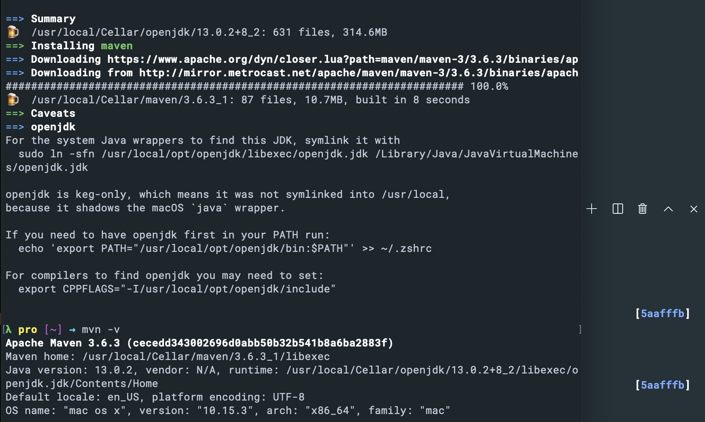

p2: introduction to SpringBoot
servlet jsp asp (最早微软出现asp), jsp 开始模仿asp
structs2 action
spring: IOC(控制反转，编程原则), AOP
springmvc 更加容易实现 Restful API
springboot: 约定大于配置, springmvc配置过于繁琐,
Interface 抽象 面向接口/抽象 面向具体
1 2 3 interface
xml
自动装配
IOC 依赖注入 -> 必须要面对的
springcoud : 如果要学习， 必须先掌握springboot 的基础
Hibernate ORM (对象关系映射), 当年微软弄出Hibernate, EntityFramework ORM
ssh (很长一段时间，java都是围绕ssh 框架)
ssm springmvc-spring mybatis
Anders Hejlsberg C# Pascal (dephi), 他也写了 TypeScript (C# 的翻版, 拯救了C#) 他设计的语言，简单，易用
IOC DI :
Inversion Of Controll 控制反转
Dependency Injection 依赖注入
1. 你自己要理解
2. 不能照搬
3. 不能用spring解释
4. 为什么
2.2.1.RELEASE
2 代表主版本
.2. 代表次要版本 增加新特性，发布小的新特性 要保证兼容
.1 代表增量版本 bug 修复
RELEASE 发布版本，里程碑版本
RC
Alpha
Beta
GA
SNAPSHOT 比较稳定 持续改进
General Availbability (我们主要适用GA 版本)
Maven(包管理工具) Gradle(用Gradle, 不需要写XML)
Maven 有一个中央仓库，放着各种包， Gradle 也在引用 Maven 的中央远程仓库
XML
Groovy DSL
SQL
DPL
reuse :
阿里有一个 fastjson 库，可以阅读学习
download maven
brew install maven

开发配置：
JDK
Maven
JetBrain Intellij Idea
VsCode Eclipse Idea
Visual Studio （宇宙第一开发工具）
初始化优先级
1. Idea
2. SpringBoot 初始化
3. Maven
常用java 命令
查看当前java 版本
java -version
查看quanbjava 版本
/usr/libexec/java_home -v